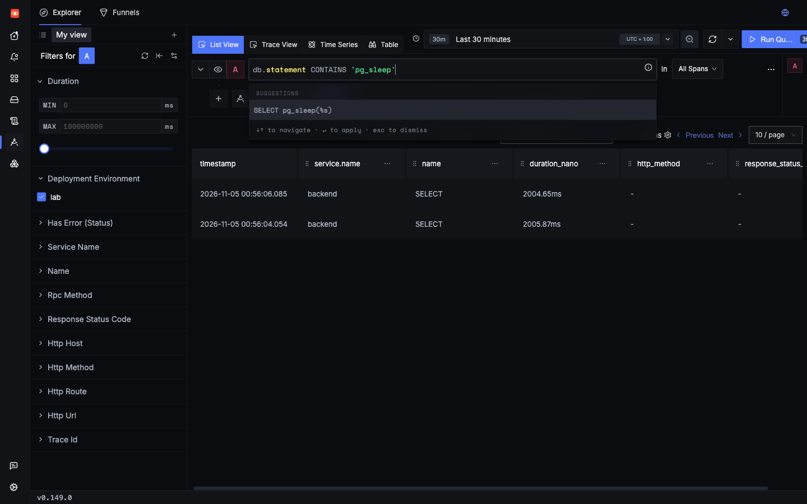
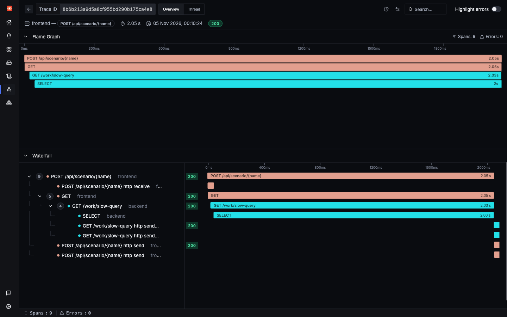

Incident 4 of 6
A slow SQL query
The app is slow because of one statement. The psycopg instrumentation records every statement, so you can find it by its text, with no changes to your queries.
1Trigger it
The slow_query scenario runs SELECT pg_sleep(2). It is not part of the load mix, so fire it yourself before searching.
2Symptom
A saved run returned HTTP 200 after 2,059 ms. As in the latency incident there is no error, only a slow response. What is different is what you find under the backend span.
3Where to look
- Open a slow trace, and look for a long database span.
- Search by database attributes in the Traces Explorer.
- Use the DB Call Metrics tab on /services/backend for a chart of database calls. That tab was seen on the page, but its charts were not checked in this lab.
4Search
Search for all slow database calls first:
Or find a statement by its text:

For a broader view, aggregate by statement type:
5Evidence

SELECT span fills almost all of the backend span.- Backend Server span: 2,025.7 ms. Its
SELECTchild: 2,002.2 ms. So 99% of the time was in Postgres. - That span is a Client span, so it measures the wait from the app's side. It includes network time, not only query time.
- The statement is
SELECT pg_sleep(%s). Bound values are not recorded, which also keeps user data out of spans.
Compare this with the latency incident. There, a long span had no children, which pointed at the code. Here, a long child points at the database.
Real outliers you did not ask for
The first search above also found two spans that no scenario caused:
| Time (UTC) | Statement type | Duration | Normal average |
|---|---|---|---|
| 23:54:03 | INSERT | 1,700.8 ms | 4.2 ms |
| 23:49:05 | SELECT | 605.5 ms | 4.8 ms for all SELECTs |
The host was heavily overloaded by unrelated work at the time, which is the likely cause, but that is not proven. Either way, this is how a real problem would look: rare, and invisible in the averages, but easy to find with one search.
6Root cause
labs/lab2-sdk/app/backend.py lines 142–146142@app.get("/work/slow-query")
143def slow_query(seconds: float = 2.0) -> dict:
144 with db() as conn:
145 conn.execute("SELECT pg_sleep(%s)", (seconds,))
146 return {"query_s": seconds}The statement sleeps on purpose. In a real incident this is where you would run EXPLAIN (ANALYZE, BUFFERS) on the statement, and look for a missing index, a large scan, or lock waits. Spans tell you which statement. They do not tell you why Postgres was slow.
7Resolution
Fix the query itself first. Then add a safety net, so that one bad query cannot hold a request open:
def db() -> psycopg.Connection:
- return psycopg.connect(DSN, autocommit=True)+ return psycopg.connect(DSN, autocommit=True, options="-c statement_timeout=1000")With this in place the statement would fail after one second. You would see a failed SELECT span instead of a slow one, which you can find with the failed database calls search.
Check yourself: db.statement shows SELECT pg_sleep(%s). Why not the real value?
Check yourself: Which span tells you the time went to Postgres rather than to Python?